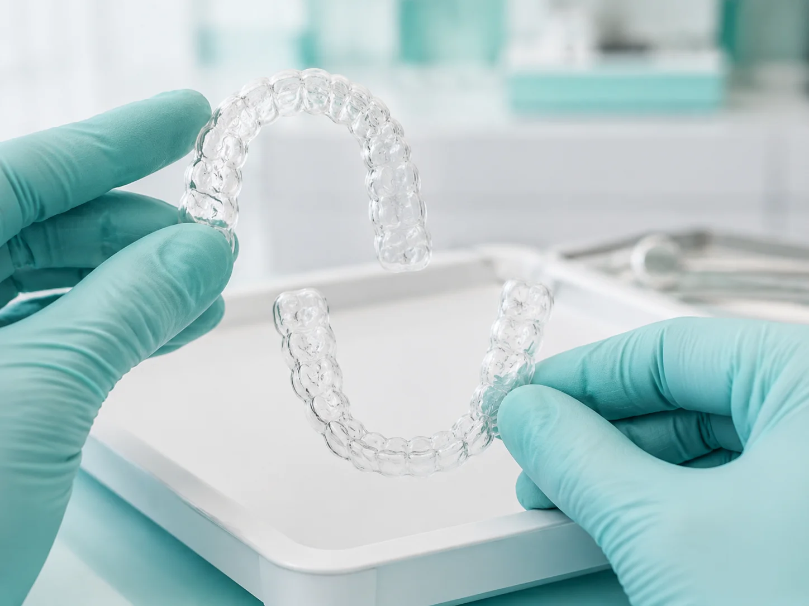
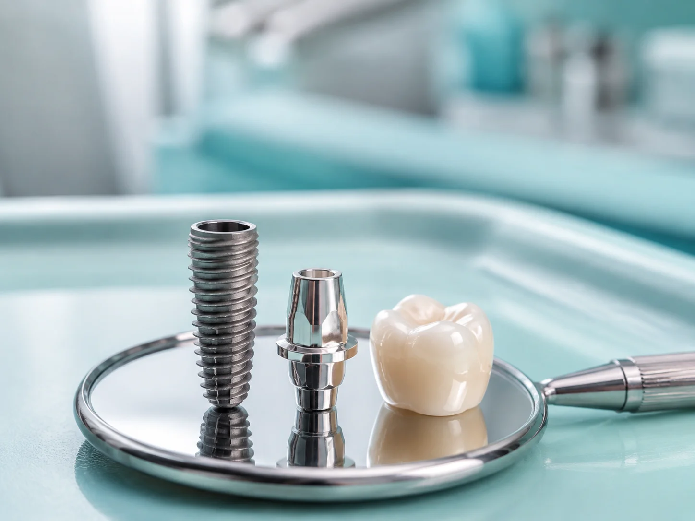
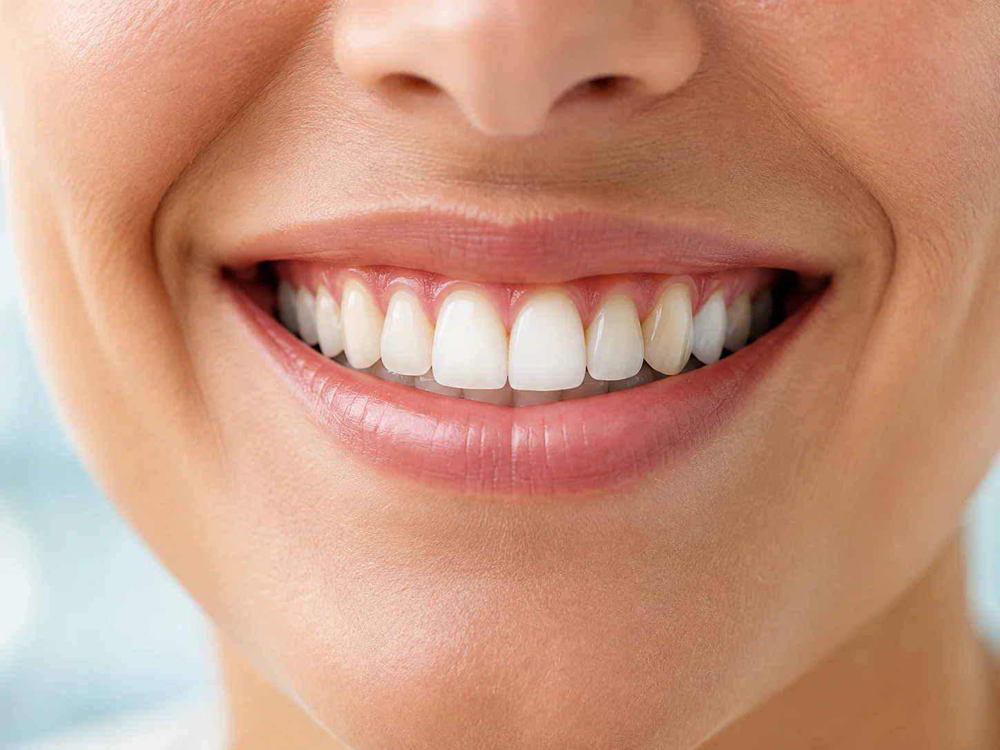
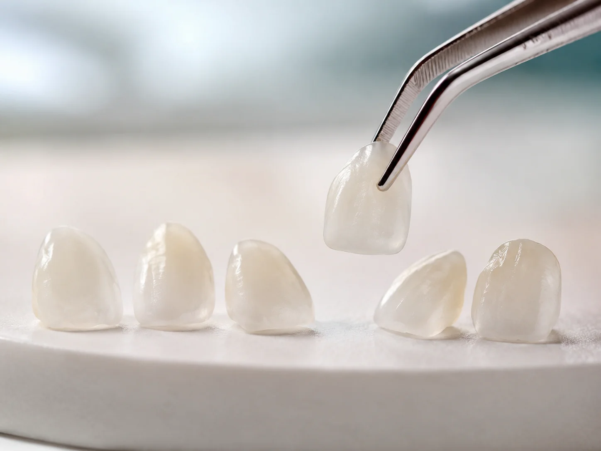
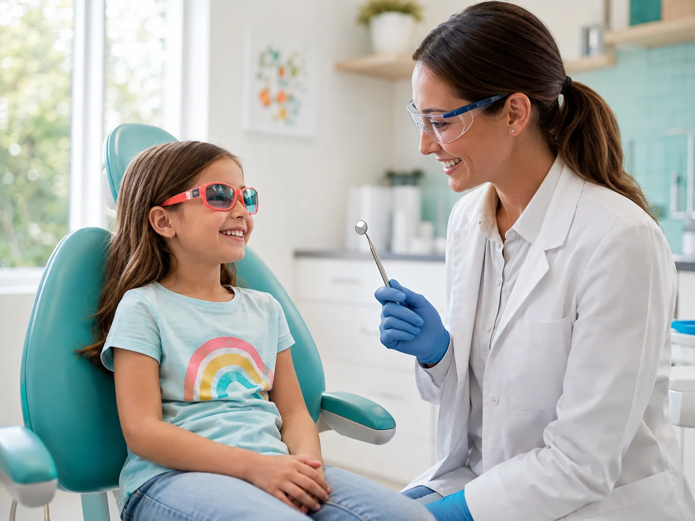
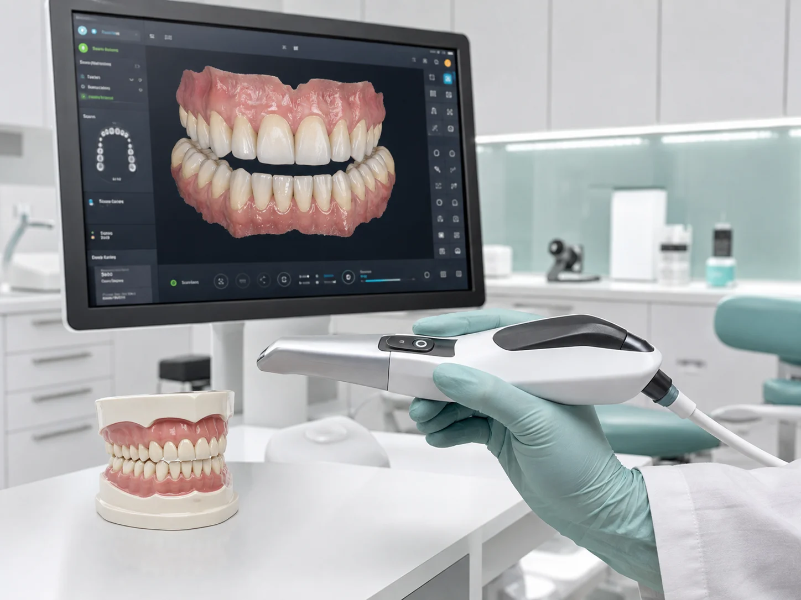
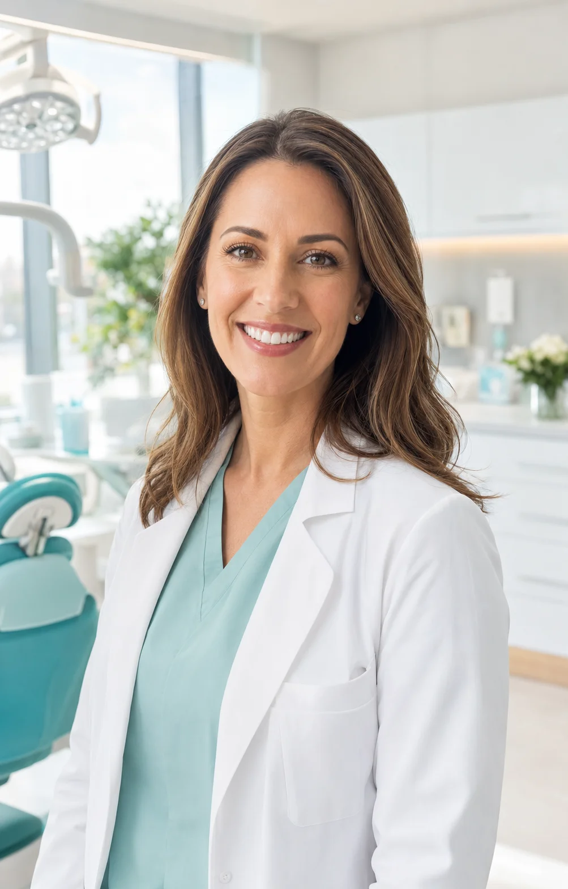

Você está visualizando o Modelo Agenda 2 da Willon Sites
Quero este siteCombinamos tecnologia 3D de alta precisão com atendimento gentil e pontual. Protocolos sem dor e planejamento digital sob medida para você e toda a sua família.
4.9 / 5.0 no Google (+320 avaliações)
Tecnologia Digital 3D
Diagnósticos rápidos e sem moldagens
15+
Anos de Experiência Clínica
+3.500
Sorrisos Renovados
CRO-SP
Especialistas Certificados
100%
Pontualidade na Agenda
Eliminamos o medo de anestesias, o desconforto das massas de moldagem e as esperas cansativas na recepção com um protocolo focado no seu bem-estar.
Técnicas de anestesia computadorizada e sedação consciente para que você realize seus procedimentos com tranquilidade absoluta.
Sem massas de moldagem que causam ânsia. Criamos a cópia digital do seu sorriso em segundos para prever o resultado antes de iniciar.
Planejamos intervalos reais entre as consultas para que você seja atendido pontualmente no horário agendado, sem atrasos.
Procedimentos modernos realizados por dentistas especialistas em cada área.

Planejamento 100% Digital
Alinhe seus dentes de forma discreta, confortável e sem fios metálicos. Alinhadores transparentes removíveis para todas as idades.
Agendar avaliação ortodôntica →
Cirurgia Guiada sem Cortes Excessivos
Recupere a mastigação e a segurança ao sorrir com implantes de titânio de alta biocompatibilidade e próteses de cerâmica perfeitas.
Agendar avaliação de implantes →
Protocolo de Baixa Sensibilidade
Dentes visivelmente mais claros com segurança para o esmalte, combinando sessões em consultório e moldeiras de manutenção em casa.
Agendar clareamento dental →
Harmonização e Forma Perfeita
Correção milimétrica de manchas, fraturas e espaços entre os dentes (diastemas) com lâminas cerâmicas ultrafinas e resistentes.
Agendar avaliação estética →
Atendimento Lúdico e Gentil
Ambiente acolhedor e linguagem amigável para cuidar dos dentes das crianças desde os primeiros anos, prevenindo o medo de dentista.
Agendar consulta infantil →
Remoção de Tártaro & Prevenção
Limpeza profunda com ultrassom, aplicação de flúor e avaliação digital preventiva para garantir dentes e gengivas 100% saudáveis.
Agendar limpeza preventiva →
CRO-SP 98.432 · Responsável Técnica
"Acredito que um tratamento odontológico de sucesso começa com escuta atenta e respeito ao ritmo de cada paciente. Nossa missão na OdontoPrime é proporcionar saúde bucal e estética impecável em um ambiente sereno e acolhedor."
Transparência total desde a primeira conversa até o resultado final.
Escolha seu horário pelo WhatsApp com nossa equipe sem filas de espera.
Exames digitais rápidos para mapear a anatomia completa da sua boca.
Apresentação clara dos procedimentos necessários, prazos e custos fechados.
Execução com protocolos sem dor e acompanhamento atencioso em cada retorno.
"Eu tinha pavor de dentista por causa de experiências ruins na infância. Na OdontoPrime a Dra. Camila teve uma paciência incrível, o atendimento é super pontual e não senti absolutamente nada durante o implante."
Mariana Silveira
Paciente há 2 anos · Implante & Estética
"Fiz o tratamento com alinhadores invisíveis e o resultado foi muito mais rápido do que eu esperava. A clínica é linda, limpa e o escaneamento 3D dispensou aquelas massas horríveis."
Ricardo Brandão
Paciente há 1 ano · Alinhadores Digitais
"Levo meus dois filhos para acompanhamento preventivo e eles adoram. Toda a equipe é carinhosa e o agendamento pelo WhatsApp facilita demais a minha rotina corrida."
Priscila Nogueira
Mãe do Theo e da Clara · Odontopediatria
Preencha a triagem ao lado informando o procedimento desejado e o melhor turno. Nossa equipe entrará em contato em minutos para agendar sua avaliação.
Agendamento Online
Não! Utilizamos técnicas anestésicas modernas, instrumentais ultrassônicos e protocolos específicos de sedação consciente para garantir conforto total durante todas as etapas.
Com uma câmera intraoral de alta precisão, geramos um modelo tridimensional digital dos seus dentes na tela. Você consegue visualizar o antes e a simulação do resultado final antes de começar.
Facilitamos seu tratamento com opções de parcelamento no cartão de crédito em até 12x sem juros, Pix com desconto para procedimentos à vista e emissão de recibos para reembolso de convênios.
Sim! Estamos localizados em uma região nobre no Jardim América, com fácil acesso ao metrô, acessibilidade total para cadeirantes e convênio com estacionamento no próprio edifício.